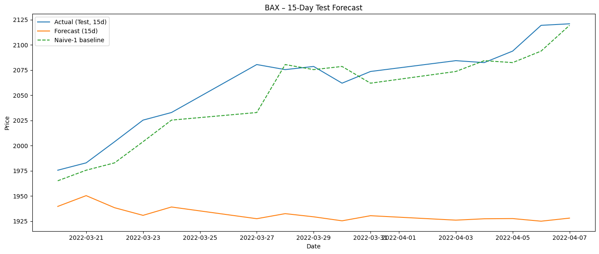
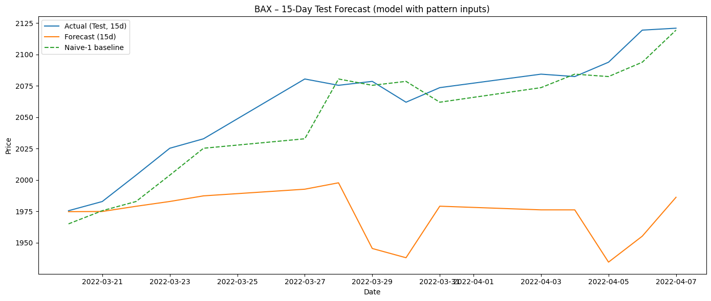

1. The problem
Forecasting financial markets is hard because prices are non stationary, non linear, and shaped by both quantitative dynamics and human psychology. Most forecasting research focuses only on the first half. This project models the second half too.
The Bahrain All Share Index is a small but volatile market that mirrors many emerging markets in one important way. Retail participation is significant. Retail traders rely heavily on candlestick chart patterns such as Doji, Hammer, Engulfing, and Harami to make decisions. A 2024 SEBI report documented that 93 percent of individual equity F&O traders lost money over FY22 to FY24, with cumulative losses exceeding 1.8 lakh crore rupees. Despite reading the same charts, the same patterns, and the same signals, retail traders systematically lose.
That regularity is the opening this project tries to exploit.
2. The contrarian idea
Conventional candlestick literature reads patterns as future direction signals. A Doji means indecision, prepare for reversal. A Hammer means bullish reversal coming. When millions of retail traders act on these textbook interpretations simultaneously, they create a predictable crowd. And in markets, predictable crowds get reversed.
The model in this project does not hard code a contrarian rule. Instead, for every trading day it computes which pattern formed in the two prior candles and feeds that label, one hot encoded, alongside the price history. The neural network is then free to learn what those patterns actually predict, which, if the contrarian hypothesis holds, will diverge from the textbook reading.
3. System architecture
The pipeline runs twice with the same architecture and the same hyperparameter search. Once with the contrarian path turned on, and once with it off. Comparing the two outputs is what tells us whether the behavioral feature actually helps.
Teal blocks form the standard, price only path that any time series forecaster would have. Coral blocks form the novel contrarian path. Gray blocks are shared infrastructure. The visual story, with coral entering at the top and producing a 26 percent lower RMSE at the bottom, is the contribution of this project.
4. How it works, step by step
Each block in the architecture maps to a specific implementation step. Reading them in order is the simplest way to understand what the code does.
Pattern detection from prior candles
For each date t, look at the OHLC values of the two previous candles (t minus 2 and t minus 1) and apply rule based logic to assign one of 11 labels. The labels are Doji, Hammer, InvertedHammer, EngulfingBull, EngulfingBear, Piercing Line, Dark Cloud Cover, Bullish Harami, Bearish Harami, SmallBullish, and SmallBearish. Crucially, the pattern for day t uses only data from days at or before t minus 1, so there is no look ahead leakage.
One hot encoding
String labels are converted into 11 dimensional binary vectors. For example, "Hammer" might become [0,0,1,0,0,0,0,0,0,0,0]. This is the format neural networks consume.
Sliding window builder
For each training sample, take the past 60 scaled close prices as the price channel and tile the target day's pattern vector across 60 rows as the pattern channels. The final shape per sample is (60, 12), that is 60 time steps with one price column and 11 pattern flag columns. This is how the model sees both data streams simultaneously at every convolution step.
Hybrid CNN-LSTM
The Conv1D layer with kernel size 2 scans the window and learns short, repeating shapes. MaxPooling1D halves the sequence and keeps the strongest local activations. The LSTM with 64 units walks through what is left, using its forget, input, and output gates to decide what to remember across the 60 day window. Dropout at 0.2 prevents memorization. Dense(1) outputs the predicted next day scaled close.
Walk forward cross validation
The training block is split into four chronological segments A, B, C, and D. The model first trains on A and validates on B, then trains on A plus B and validates on C, and finally trains on A plus B plus C and validates on D. Time order is preserved at every step. This rolling origin scheme is the only honest way to do cross validation on a time series, since random k fold would leak the future into training.
Recursive 15 day forecast
At inference, the trained model only knows how to predict one day ahead. To forecast 15 days, the code predicts day 1, appends that prediction to the input window, drops the oldest value, and predicts day 2. This is repeated 15 times. Pattern flags for the first forecast day come from real history. For subsequent days they fall back to zeros, since no real candles exist yet.
Evaluation
The 15 day forecast is compared against actual prices on the held out 20 percent test block using MAE, RMSE, and MAPE. The whole pipeline is then run a second time with the pattern channels disabled. That is the baseline. The two are compared head to head.
5. Results
Both models were trained on the same 80 percent of BAX history (2010 to roughly mid 2022) and evaluated on the same 15 day window starting March 20, 2022.
Baseline
Price only. No behavioral feature.

Contrarian
Price plus 11 pattern channels.

The visual difference is clear. The baseline forecast (top) flatlines around 1925 while the actual price climbs to 2120. The model never adapts. The contrarian forecast (bottom) starts much closer to the actual line and tracks it well for the first seven days before drifting in the back half of the horizon.
Test metrics
| Model | MAE | RMSE | MAPE | vs. baseline |
|---|---|---|---|---|
| Baseline (price only) | 127.57 | 136.93 | 6.15% | Reference |
| Contrarian (price plus patterns) | 87.33 | 101.17 | 4.19% | 26.1% lower RMSE |
The headline result is that RMSE drops by 26.1 percent when the behavioral feature is added. MAE drops by 31.5 percent, and MAPE by 31.9 percent. All three metrics improve by similar magnitudes, which is a good sign. The gain is not a single metric artifact.
6. What this means
A few things are worth pulling out from these numbers.
- The pattern channel is doing real work. The architecture, hyperparameters, training procedure, scaling, and data are otherwise identical between the two runs. The only difference is the 11 pattern columns. A 26 percent RMSE reduction from one feature group is meaningful in time series forecasting.
- The contrarian framing is empirical, not ideological. The model is not told to do the opposite of textbook. It just sees the pattern label as a feature and learns from data what comes next. The fact that this helps is consistent with the contrarian hypothesis. The model would also pick up any non contrarian regularity if one existed.
- The first half of the forecast is much better than the second half. This is visible in both plots, and it is explained by the recursive setup. Errors compound across 15 sequential predictions, and pattern flags fall back to zero after day 1 since future candles are not observed. A multi step model trained directly on 15 day targets, or a dynamic pattern simulator, would likely flatten this drift.
7. Honest limitations
A real piece of work is not a sales pitch. These caveats are worth stating openly.
- Single test window. Both metrics come from one 15 day held out slice starting March 2022. A more rigorous validation would re run the same comparison across multiple rolling windows and report the distribution. The project report itself recommends this as the next step.
- GPU non determinism. TensorFlow on GPU is not fully reproducible even with fixed seeds. Re running this notebook produces meaningfully different RMSE values run to run. The 26 percent improvement reported here is from the run preserved in the saved notebook outputs and matches the project report figures. Other runs of the same code may show smaller, or occasionally negative, improvements.
- Naive baseline outperforms both. A trivial "tomorrow equals today" predictor scores RMSE 8.7 on this same window, far better than either CNN-LSTM. This is because recursive multi step forecasting compounds errors while the naive predictor only ever has to be right one step ahead. The CNN-LSTM models are still useful for capturing structure, but in a real trading context this is a serious benchmark to beat.
- Pattern detection is rule based and crude. The 11 patterns are detected with simple body and shadow ratio heuristics. A learned pattern detector or a richer behavioral feature set (volume, order flow, sentiment) would likely help further.
- BAX is a thinly traded market. Findings here may not transfer to liquid markets like the S&P 500 or Nifty 50 without re-validation.
8. Tools and references
Built with Python, TensorFlow, Keras, scikit-learn, pandas, NumPy, and matplotlib. Trained on Kaggle free P100 GPU. Data was sourced from Investing.com.
The behavioral framing is grounded in SEBI 2024 report on retail F&O trader losses. The CNN-LSTM hybrid follows the now standard pattern in financial time series literature of using convolutions for local structure and recurrence for long range dependencies.
The full project report, including the literature review, comparison against ARIMA, SARIMA, XGBoost, and Random Forest baselines, and chapter by chapter methodology, is available here. The two Kaggle notebooks (baseline and contrarian) are rendered with all original outputs (plots, training history, printed metrics) on GitHub.